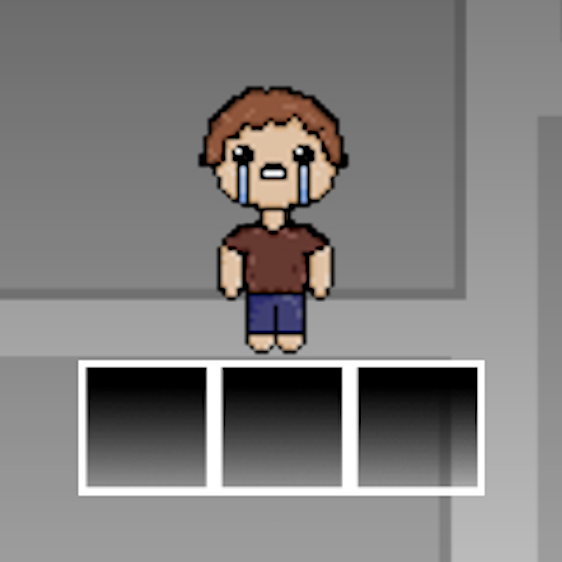

Tomáš Vaněk / Windows, web, mody
Opravuji to, co by nemělo být rozbité,
dělám to, co už dávno mělo být vytvořeno.
O mně
Jsem středoškolský student. Zajímá mě programování, hardware a správa operačních systémů.
Baví mě řešit problémy, bez ohledu na to, jak moc podstatné jsou. Ať už jde o zahleněný Windows, nebo o mod do hry, která je už dávno zapomenutá. Pracuji v Inkscape, Photoshopu, Paint.NET a Blenderu. Stavím a spravuji počítače. Zkouším nové jazyky a technologie a portfolio postupně roste.
- C#
- Python
- HTML / CSS / JS
- TypeScript
- Lua
- Batch
- Blender
- Inkscape
Projekty
Windows Software
-
KASPAR
Windows "debloater", sada nástrojů pro úpravu systému. Skryté nastavení, registry a vracení změn zpět.
C# / WinUI 3- KasparNRO - Instalace Windows bez internetu, s lokálním účtem. Samostatný skript z KASPARu. (Batch)
-
Custom-AutoPlay
Nástroj pro automatickou úpravu registrů Windows AutoPlay.
Python -
Soundpad Translator
Druhá klávesnice jako soundboard pro Soundpad. Její klávesy se nedostanou do Windows, místo toho přehrají zvuk.
C# -
Cliptard
Náhrada historie schránky z Windows 11, pro chvíle, kdy ji update zase rozbije. Otevírá se přes Alt+V+C.
Python
Webové projekty
-
Keyboard Hero
Webová aplikace pro ZUŠ Moravský Krumlov s cílem motivovat děti k pravidelnému domácímu cvičení na hudební nástroj hravou formou.
TypeScript -
Persona 3 Reload - Compendium
Kompletní Compendium ze hry Persona 3 Reload v prohlížeči.
HTML / JS -
Počasí a kvalita ovzduší
Zadáš město, dostaneš aktuální počasí, index ovzduší (PM2.5, PM10, O3) a předpověď na další dny. Data z WeatherAPI, klíč se vkládá až při nasazení přes GitHub Actions.
HTML / CSS / JS -
P3R Portfolio
Druhé portfolio ve stylu Persona 3 Reload. Zatím slouží jako showcase.
HTML / CSS / JS -
Sonic Decompilation
Návod, jak legálně vytvářet dekompilace her Sonic.
RSDK / HTML / CSS
Hry a mody
-
Flash EID
External Item Descriptions pro původní Flash verzi The Binding of Isaac (včetně Wrath of the Lamb). Popisy všech 196 itemů, 34 trinketů, 27 karet a pilulek přímo ve hře, F2 je skryje. Patcher sestaví modovanou hru z tvé vlastní kopie.
Lua / ActionScript / Python -
Item Upgrader
Mod pro The Binding of Isaac: Repentance+ (REPENTOGON). Aktivní item otevře nabídku, kde vsadíš svůj item a v ruletě ho vylepšíš nebo zduplikuješ.
Lua · v0.1 -
JSaB Save Editor
Dekodér, enkodér a editor savů pro hru Just Shapes and Beats.
Python -
WASD-to-arrows
Ovládání WASD ve hrách, které podporují jen šipky.
Python
Ostatní
WIP
-
P2P messaging app
Peer-to-peer messenger.
rozpracováno
Galerie
Certifikáty
Projekty v Inkscape
Ostatní

GitHub